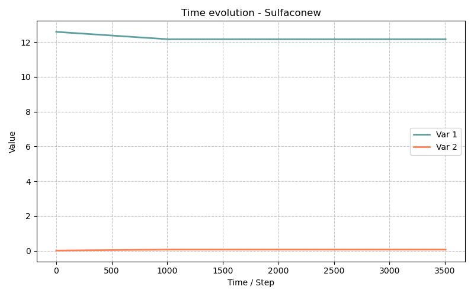

Modèle Sulfaconew — Refactorisation C++ du modèle Sulfaco avec l'interface MaterialPointMethod
Fichiers sources :
src/Models/ModelFiles/Sulfaconew.cpp·base/Sulfaconew/Sulfaconew·base/Sulfaconew/SulfacoAuteurs du modèle : Gu, Dangla (Université Gustave Eiffel) Titre interne : "Internal/External sulfate attack of concrete (2017)" (identique à Sulfaco)
Table des matières
- Contexte et objectif
- Ce que Sulfaconew n'est PAS
- Architecture C++ : les nouveautés
- 3.1 L'interface
MaterialPointMethod - 3.2 Les structures de valeurs typées
- 3.3 Le namespace
BaseName() - 3.4 Les paramètres nommés
- Physique du modèle (identique à Sulfaco)
- Test de régression : comparaison Sulfaco vs Sulfaconew
- Description pas-à-pas des fichiers d'entrée
- 6.1 Fichier
Sulfaconew— simulation avec le nouveau modèle - 6.2 Fichier
Sulfaco— simulation de référence avec l'ancien modèle - Tableau de correspondance des paramètres
- Conseils pour étendre le modèle
- Références bibliographiques
1. Contexte et objectif
Le modèle Sulfaconew simule exactement la même physique que Sulfaco — l'attaque sulfatique interne/externe du béton, avec chimie multi-espèces, cinétiques de précipitation et pression de cristallisation de l'ettringite. Sa raison d'être n'est pas une nouvelle loi de comportement, mais une réingénierie logicielle complète du code source :
Sulfaconew = Sulfaco (physique) +
MaterialPointMethod(architecture C++ moderne)
L'objectif est de migrer progressivement les modèles BIL d'un style C procédural (tableaux bruts, macros #define, indices entiers) vers une architecture C++ orientée objet, générique et auto-différentiable. Sulfaconew sert de modèle de référence pour cette migration.
Sulfaco.c (C, 2017) Sulfaconew.cpp (C++, 2024)
─────────────────────────────────────────────────────────────────
static double* f = ... struct ImplicitValues_t<T> {
#define N_CH(i) (f+7*NN*NN)[i] T Mole_solidportlandite;
#define N_AFt(i) (f+7*NN*NN+4*NN)[i] T Mole_solidAFt;
...
#define R_AFm 12 };
pm("R_AFm") → 12
struct Parameters_t {
GetProperty("R_AFm") double r_afm;
...
};
2. Ce que Sulfaconew n'est PAS
- Pas un nouveau modèle physique : les équations de conservation, les lois cinétiques, la pression de cristallisation, le transport de Nernst-Planck sont identiques à Sulfaco.
- Pas une extension : mêmes 6 inconnues, mêmes phases solides, même domaine 1D.
- Pas une correction de bugs : la physique est préservée à l'identique, comme le démontrent les simulations de régression dans
base/Sulfaconew/.
3. Architecture C++ : les nouveautés
3.1 L'interface MaterialPointMethod
Le cœur de la refactorisation est l'adoption de l'interface MaterialPointMethod_t<Values_t> de BIL. Là où Sulfaco.c implémentait directement les fonctions BIL globales (ComputeInitialState, ComputeImplicitTerms, etc.), Sulfaconew.cpp délègue ces responsabilités à une structure MPM_t :
struct MPM_t : public MaterialPointMethod_t<Values_t> {
MaterialPointMethod_SetInputs_t<Values_t> SetInputs;
MaterialPointMethod_Integrate_t<Values_t> Integrate;
MaterialPointMethod_Initialize_t<Values_t> Initialize;
MaterialPointMethod_SetTangentMatrix_t<Values_t> SetTangentMatrix;
MaterialPointMethod_SetFluxes_t<Values_t> SetFluxes;
MaterialPointMethod_SetIndexOfPrimaryVariables_t SetIndexOfPrimaryVariables;
MaterialPointMethod_SetIncrementOfPrimaryVariables_t SetIncrementOfPrimaryVariables;
};
Chaque membre est une méthode de point matériau avec une responsabilité unique et claire :
| Méthode | Rôle | Équivalent dans Sulfaco.c |
|---|---|---|
SetInputs |
Lit les inconnues nodales → remplit Values_t |
Début de ComputeImplicitTerms |
Initialize |
Calcule l'état initial (t=0) | ComputeInitialState |
Integrate |
Intègre les lois constitutives sur [t, t+dt] |
Corps de ComputeImplicitTerms |
SetTangentMatrix |
Calcule la matrice de rigidité tangente | ComputeMatrix |
SetFluxes |
Calcule les flux entre éléments | ComputeResidu (partie flux) |
SetIndexOfPrimaryVariables |
Mappe inconnues ↔ indices | pm() + macros E_Sulfur... |
SetIncrementOfPrimaryVariables |
Met à jour les incréments Newton | Implicite dans le solveur |
3.2 Les structures de valeurs typées
Au lieu des tableaux double* f avec des macros #define N_CH(i) (f+offset)[i], Sulfaconew utilise des structs C++ templatées qui nomment chaque champ :
template<typename T = double>
struct ImplicitValues_t {
T U_sulfur;
T U_charge;
T U_calcium;
T U_potassium;
T U_aluminium;
T U_eneutral; // (si E_ENEUTRAL défini)
T Mole_sulfur;
T MolarFlow_sulfur[Element_MaxNbOfNodes];
T Mole_calcium;
T MolarFlow_calcium[Element_MaxNbOfNodes];
// ... (tous les bilans de masse et flux)
T Mole_solidportlandite;
T Mole_solidgypsum; // CSH2
T Mole_solidAH3;
T Mole_solidAFm;
T Mole_solidAFt;
T Mole_solidC3AH6;
T Mole_solidCSH;
T Porosity;
T Strain;
T CrystalPressure;
T DamageStrain;
T PoreRadius;
T SaturationDegree_crystal;
// ...
};
Le paramètre template T est la clé de l'architecture : en substituant T = double pour les calculs normaux, ou T = autodiff::dual (différentiation automatique), la même fonction Integrate calcule à la fois les valeurs et les dérivées exactes pour la matrice tangente, sans écrire de code de dérivation à la main.
De même :
template<typename T = double>
struct ExplicitValues_t {
T Tortuosity_liquid;
T AqueousConcentration[CementSolutionDiffusion_NbOfConcentrations];
};
template<typename T = double>
struct ConstantValues_t {
T InitialVolume_solidtotal;
};
Ces trois structures remplacent les zones mémoire f (implicite), va (explicite) et v0 (constant) de Sulfaco.c, avec des noms lisibles plutôt que des offsets entiers.
3.3 Le namespace BaseName()
namespace BaseName() {
template<typename T> struct ImplicitValues_t;
template<typename T> struct ExplicitValues_t;
// ...
struct Parameters_t { ... };
}
using namespace BaseName();
Le macro BaseName() génère un nom de namespace unique dérivé du nom du fichier source (Sulfaconew). Cette technique isole les types du modèle dans un espace de noms propre, évitant les conflits de noms lorsque plusieurs modèles BIL sont compilés ensemble (par exemple si deux modèles définissent tous les deux une struct Parameters_t).
3.4 Les paramètres nommés
La fonction pm() de Sulfaco renvoyait un entier index dans un tableau double[] :
Dans Sulfaconew, pm() utilise le macro Parameters_Index(champ) qui calcule automatiquement l'offset de chaque champ dans la struct Parameters_t :
// Sulfaconew.cpp : auto-calculé, résistant aux refactorisations
if(!strcmp(s,"PrecipitationRate_AFm")) {
return (Parameters_Index(r_afm)) ;
}
Les noms de paramètres dans le fichier d'entrée sont également renommés pour être auto-documentés (voir §7).
En outre, ReadMatProp initialise les valeurs par défaut directement dans le code :
// Valeurs par défaut si non précisées dans le fichier d'entrée
Material_GetProperty(mat)[pm("PrecipitationRate_AFm")] = 4.6e-4 ; /* mol/L/s, Salgues 2013 */
Material_GetProperty(mat)[pm("PrecipitationRate_AFt")] = 4.6e-4 ;
Material_GetProperty(mat)[pm("PrecipitationRate_C3AH6")] = 1.e-10 ;
Material_GetProperty(mat)[pm("PrecipitationRate_CSH2")] = 1.e-10 ;
Cela évite les comportements indéterminés lorsqu'un paramètre est omis.
4. Physique du modèle (identique à Sulfaco)
La physique est rigoureusement identique au modèle Sulfaco. Se référer à ce document pour le détail complet. En résumé :
6 équations de conservation (Volumes Finis) : $\(\frac{\partial N_S}{\partial t} + \nabla \cdot \mathbf{W}_S = 0 \qquad \frac{\partial N_{Ca}}{\partial t} + \nabla \cdot \mathbf{W}_{Ca} = 0 \qquad \cdots\)$
Chimie de solution résolue par HardenedCementChemistry.h à \(T = 293\,\text{K}\).
Cinétiques solides (AFt, AFm, CSH2, C₃AH₆) du premier ordre en sursaturation : $\(n_x(t+\Delta t) = \max\!\left(n_x(t) + \Delta t \cdot R_x \cdot (S_x - 1),\, 0\right)\)$
Pression de cristallisation (Kelvin-Thomson) : $\(P_c = \frac{RT}{V_\text{AFt}} \ln\!\left(\beta\right) \qquad \beta_\text{eq}(r) = \exp\!\left(\frac{2\,\Gamma_\text{AFt}\,V_\text{AFt}}{RT\,r}\right)\)$
Endommagement par loi exponentielle : $\(D(\varepsilon) = 1 - \frac{\varepsilon_0}{\varepsilon}\exp\!\left(-\frac{\varepsilon - \varepsilon_0}{\varepsilon_f}\right)\)$
Transport de Nernst-Planck avec tortuosité de Bazant-Najjar : $\(\mathbf{W}_i = -\phi\,\tau(\phi)\left(D_i \nabla c_i + z_i \frac{F D_i}{RT} c_i \nabla\psi\right)\)$
5. Test de régression : comparaison Sulfaco vs Sulfaconew
Le répertoire base/Sulfaconew/ contient deux fichiers d'entrée distincts, chacun lançant la même simulation avec un modèle différent :
| Fichier | Modèle BIL | Objectif |
|---|---|---|
Sulfaconew |
Sulfaconew |
Simulation avec le nouveau code C++ |
Sulfaco |
Sulfaco |
Simulation de référence avec l'ancien code C |
Les paramètres matériaux, les conditions initiales, les fonctions temporelles et la discrétisation sont strictement identiques entre les deux fichiers (voir les différences de nommage au §7). Le fichier Gnuplot Sulfaconew.gp lit le fichier Sulfaco.p1 (issu du fichier d'entrée Sulfaco) et trace les mêmes 9 figures que base/Sulfaco/Sulfaco.gp. Ceci permet de vérifier visuellement que les deux implémentations produisent exactement les mêmes résultats.
Résultats attendus identiques (à la précision numérique près) :
| Figure | Sortie |
|---|---|
| 1 | Déformation de gonflement \(\varepsilon(t)\) |
| 2 | Indice de saturation de l'AFt |
| 3 | Teneur en ettringite \(n_\text{AFt}(t)\) |
| 4 | Pression de cristallisation \(P_c(t)\) |
| 5 | pH de la solution de pores |
| 6 | Indices de saturation AFt et gypse (CSH₂) |
| 7 | Phases solides : CH, AFt, C₃AH₆ |
| 8 | Concentration en \(\text{SO}_4^{2-}\) |
| 9 | Contrainte effective \(S_c \cdot P_c\) vs déformation |

6. Description pas-à-pas des fichiers d'entrée
6.1 Fichier Sulfaconew — simulation avec le nouveau modèle
Système d'unités et géométrie
Units
Length = decimeter
Time = second
Mass = hectogram
Geometry
Dimension = 1 plan
Mesh
2 ← 2 nœuds
0. 1 ← Nœud 1 : x=0
1. ← Nœud 2 : x=1 dm
1 ← 1 élément
1 ← Région 1
Identique à base/Sulfaco/Sulfaco.
Matériau (Material) — noms de paramètres explicites
Material
Model = Sulfaconew
InitialPorosity = 0.23
InitialContent_CH = 1.53
InitialContent_CSH = 1.393
InitialContent_AH3 = 1.e-6
InitialContent_CSH2 = 0
InitialContent_AFm = 0
InitialContent_AFt = 0
InitialContent_C3AH6 = 0.2
PrecipitationRate_CSH2 = 1.e-12
PrecipitationRate_AFm = 1.e-6
PrecipitationRate_C3AH6 = 1.e-6
PrecipitationRateAtInterface_AFt = 8.4e-8
PrecipitationRateAtPoreWall_AFt = 4.4e-9
ElasticBulkModulus = 30.1e9
BiotCoef = 0.54
Strain0 = 4.e-4
Strainf = 6.4e-3
AdsorbedSulfatePerUnitMoleOfCSH_coefA = 0
AdsorbedSulfatePerUnitMoleOfCSH_coefB = 0.87
Curves_log = Sat r = Range{r1 = 1.e-8 , r2 = 1.e-3 , n = 1000}
S_r = Expressions(1){r0=155.82e-8; m = 0.2516 ; S_r = (1 + (r0/r)**(1/(1-m)))**(-m)}
Nouveautés par rapport à Sulfaco :
porosity→InitialPorosity: précise que c'est la porosité initiale (avant réaction).N_CH→InitialContent_CH: indique clairement la teneur initiale en mol/L.K_bulk→ElasticBulkModulus: nom physiquement explicite (module de compression isostatique).Biot→BiotCoef: distingue le coefficient de Biot d'autres paramètres nommésBiotdans d'autres modèles.A_i→PrecipitationRateAtInterface_AFt: distingue la croissance à l'interface libre (paroi de pore) de la croissance en pore confiné.A_p→PrecipitationRateAtPoreWall_AFt: croissance dans le pore confiné qui génère la pression.AlphaCoef,BetaCoef→AdsorbedSulfatePerUnitMoleOfCSH_coefA/B: nomme explicitement la loi d'adsorption de Langmuir.R_AFm,R_C3AH6... →PrecipitationRate_*: uniformise le préfixe pour toutes les cinétiques.
Valeurs par défaut dans le code : si DissolutionRateAtInterface_AFt et DissolutionRateAtPoreWall_AFt ne sont pas précisés dans le fichier, ReadMatProp les initialise automatiquement à la même valeur que les taux de précipitation correspondants (symétrie précipitation/dissolution).
Initialisation, Fonctions, Conditions aux limites
Strictement identiques à base/Sulfaco/Sulfaco : mêmes 6 inconnues logc_so4, psi, z_ca, z_al, logc_k, logc_oh, mêmes 5 fonctions temporelles à 5 paliers, mêmes conditions aux limites en région 1.
Fenêtre temporelle et convergence
Dates
2
0. 3.5e6 # t=0 à t=3.5×10⁶ s ≈ 40 jours
Time Steps
Dtini = 1.e3 # Pas initial de 1000 s
Dtmax = 1.e3 # Pas fixe de 1000 s
Identique à base/Sulfaco/Sulfaco.
6.2 Fichier Sulfaco — simulation de référence avec l'ancien modèle
Ce fichier fait tourner l'ancien modèle Sulfaco avec exactement les mêmes paramètres physiques (traduits dans l'ancienne nomenclature) :
Material
Model = Sulfaco ← ancien modèle
porosity = 0.23 ← vs InitialPorosity
N_CH = 1.53 ← vs InitialContent_CH
N_CSH = 1.393
N_AH3 = 1.e-6
N_C3AH6 = 0.2
R_CSH2 = 1.e-12 ← vs PrecipitationRate_CSH2
R_AFm = 1.e-6
R_C3AH6 = 1.e-6
A_i = 8.4e-8 ← vs PrecipitationRateAtInterface_AFt
A_p = 4.4e-9 ← vs PrecipitationRateAtPoreWall_AFt
K_bulk = 30.1e9 ← vs ElasticBulkModulus
Biot = 0.54 ← vs BiotCoef
Strain0 = 4.e-4
Strainf = 6.4e-3
AlphaCoef = 0 ← vs AdsorbedSulfatePerUnitMoleOfCSH_coefA
BetaCoef = 0.87 ← vs AdsorbedSulfatePerUnitMoleOfCSH_coefB
Note importante : ce fichier n'utilise pas de courbe Curves_log = Sat ... : la courbe de saturation est cherchée dans le fichier Sat présent dans le répertoire, lu automatiquement par BIL.
Le fichier .gp lit Sulfaco.p1 pour produire les figures de régression, ce qui permet de comparer graphiquement les sorties des deux modèles sans modifier le script de visualisation.
7. Tableau de correspondance des paramètres
| Sulfaco (ancien nom) | Sulfaconew (nouveau nom) | Valeur dans les cas tests | Signification |
|---|---|---|---|
porosity |
InitialPorosity |
0.23 | Porosité initiale du béton sain |
N_CH |
InitialContent_CH |
1.53 mol/L | Teneur initiale en portlandite |
N_CSH ou N_Si |
InitialContent_CSH |
1.393 mol/L | Teneur initiale en C-S-H |
N_AH3 |
InitialContent_AH3 |
1e-6 mol/L | Teneur initiale en gibbsite |
N_CSH2 |
InitialContent_CSH2 |
0 | Pas de gypse initial |
N_AFm |
InitialContent_AFm |
0 | Pas de monosulfoaluminate initial |
N_AFt |
InitialContent_AFt |
0 | Pas d'ettringite secondaire initiale |
N_C3AH6 |
InitialContent_C3AH6 |
0.2 mol/L | Hydrogrenat initial |
R_CSH2 |
PrecipitationRate_CSH2 |
1e-12 mol/L/s | Cinétique gypse (lente) |
R_AFm |
PrecipitationRate_AFm |
1e-6 mol/L/s | Cinétique AFm |
R_C3AH6 |
PrecipitationRate_C3AH6 |
1e-6 mol/L/s | Cinétique C₃AH₆ |
A_i |
PrecipitationRateAtInterface_AFt |
8.4e-8 | Cinétique AFt à l'interface libre |
A_p |
PrecipitationRateAtPoreWall_AFt |
4.4e-9 | Cinétique AFt en pore confiné |
K_bulk |
ElasticBulkModulus |
30.1e9 Pa | Module de compression isostatique |
Biot |
BiotCoef |
0.54 | Coefficient de Biot |
Strain0 |
Strain0 |
4e-4 | Déformation seuil d'endommagement |
Strainf |
Strainf |
6.4e-3 | Déformation caractéristique de rupture |
AlphaCoef |
AdsorbedSulfatePerUnitMoleOfCSH_coefA |
0 | Coefficient \(\alpha\) adsorption (désactivé) |
BetaCoef |
AdsorbedSulfatePerUnitMoleOfCSH_coefB |
0.87 | Coefficient \(\beta\) adsorption Langmuir |
| (pas d'équivalent) | DissolutionRateAtInterface_AFt |
= A_i par défaut |
Cinétique de dissolution à l'interface |
| (pas d'équivalent) | DissolutionRateAtPoreWall_AFt |
= A_p par défaut |
Cinétique de dissolution en pore |
8. Conseils pour étendre le modèle
L'architecture MaterialPointMethod de Sulfaconew est conçue pour faciliter les extensions. Voici comment ajouter une nouvelle variable d'état :
1. Ajouter le champ dans ImplicitValues_t :
template<typename T = double>
struct ImplicitValues_t {
// ... champs existants ...
T MaNouvellVariable; // ← ajout ici
};
2. Calculer sa valeur dans MPM_t::Integrate :
3. La dérivée pour la matrice tangente est automatique : si T = autodiff::dual, le calcul de MaNouvellVariable propage automatiquement les dérivées partielles.
4. Ajouter le paramètre matériau dans Parameters_t :
5. Déclarer la lecture dans pm() :
En comparaison, ajouter la même variable dans Sulfaco.c nécessiterait : (1) choisir manuellement un offset NVI, (2) ajouter un #define, (3) incrémenter NVI, (4) ajouter la dérivée à la main dans ComputeMatrix.
9. Références bibliographiques
-
Dangla, P. (2018). BIL — A finite element code for coupled problems in mechanics, physics and chemistry. Documentation interne, Université Gustave Eiffel. — Description de l'interface
MaterialPointMethodet du frameworkCustomValues_tutilisé dans Sulfaconew. -
Les références physiques du modèle (Biot, Coussy, Flatt-Scherer, Nernst-Planck, Van Genuchten) sont identiques à celles de Sulfaco.
-
Langer, U. & Steinbach, O. (Eds.) (2016). Adaptive Finite Elements in Linear and Nonlinear Solid and Structural Mechanics. CISM Courses and Lectures. — Contexte général des architectures de solveurs EF orientés objet avec templates C++.
-
Logg, A., Mardal, K.-A., & Wells, G. (2012). Automated Solution of Differential Equations by the Finite Element Method (FEniCS). Springer. — Exemple de référence d'une architecture similaire : types paramétrés par
Tpour la différentiation automatique dans un code EF générique.